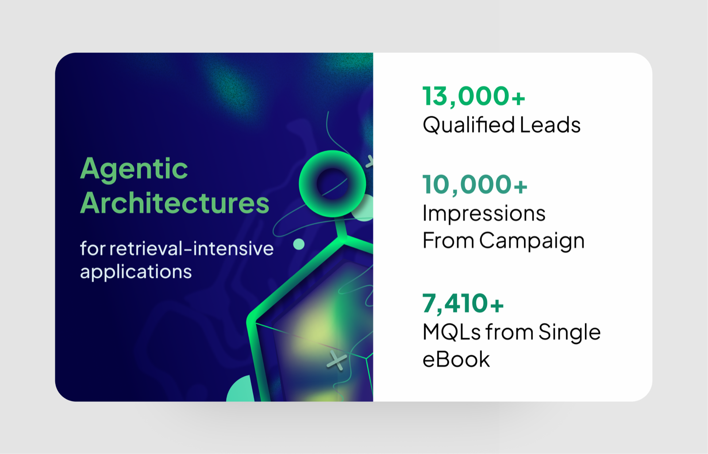
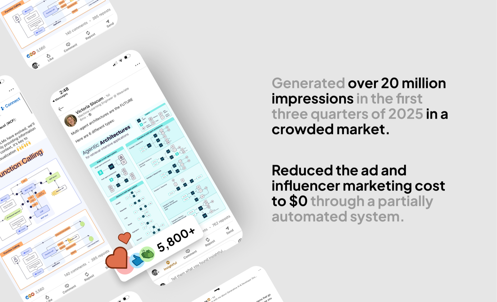
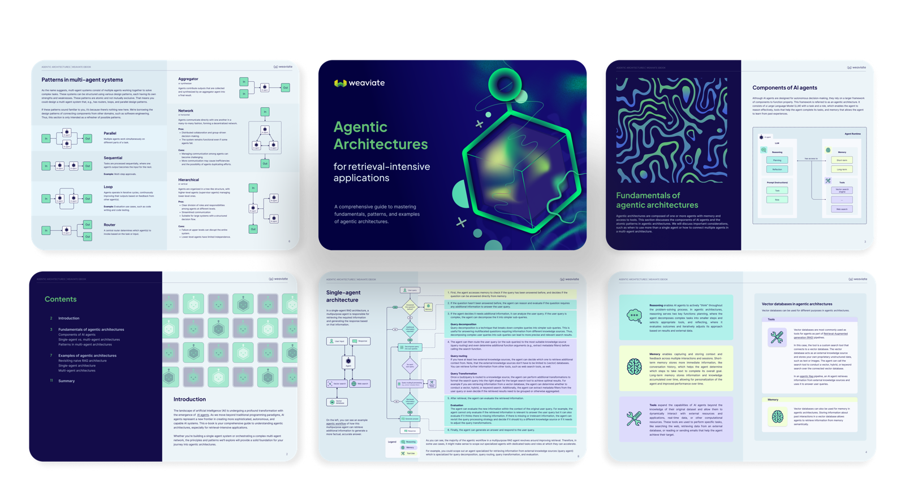
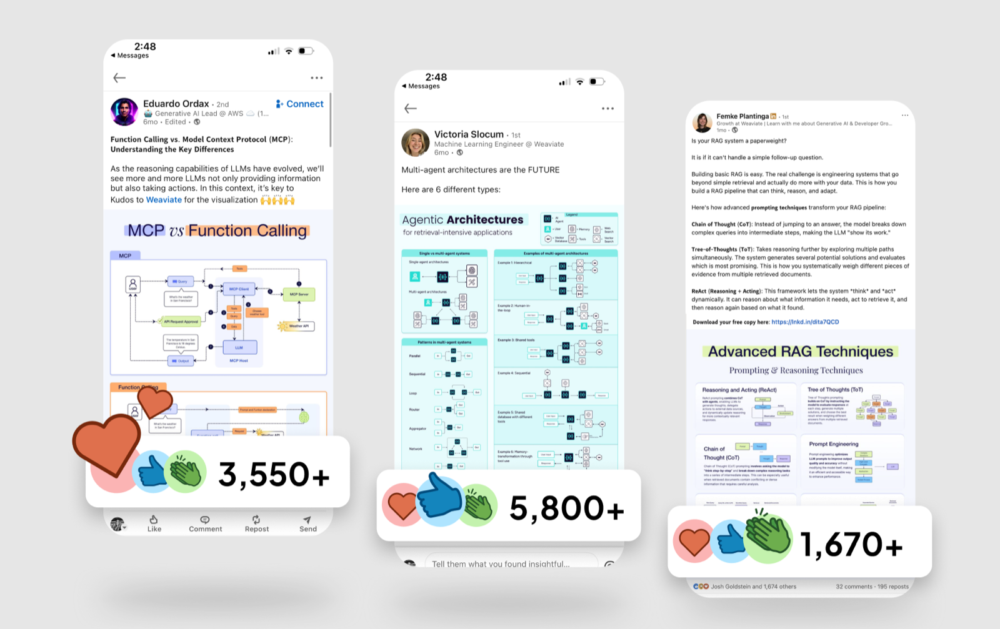
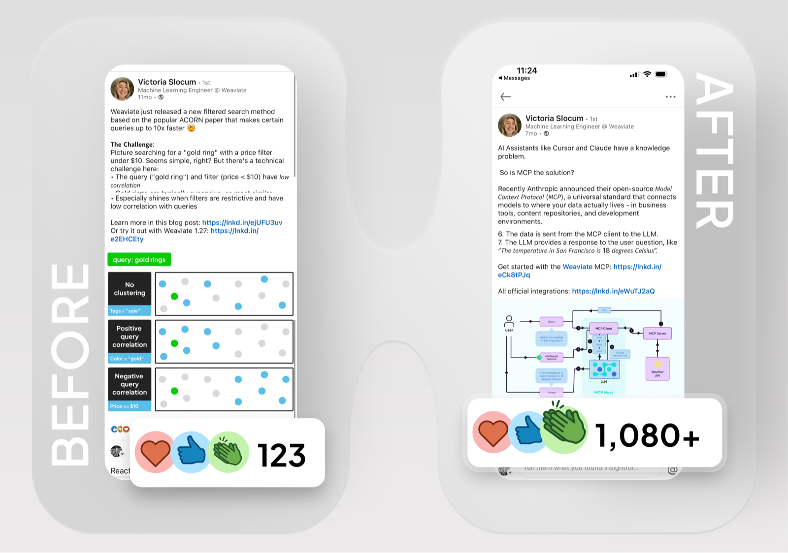
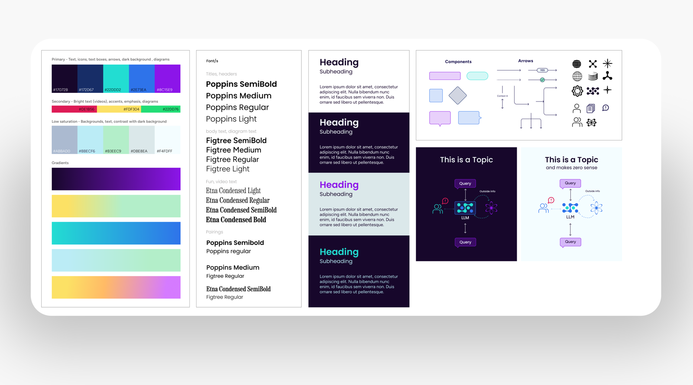
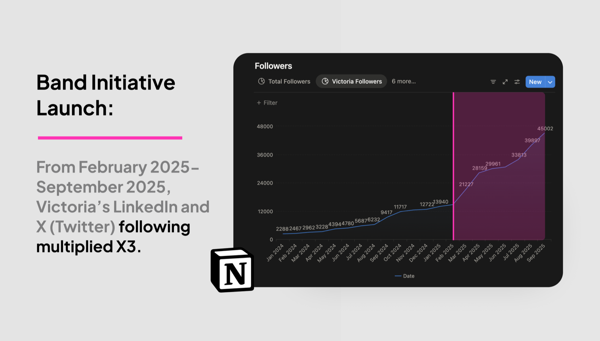
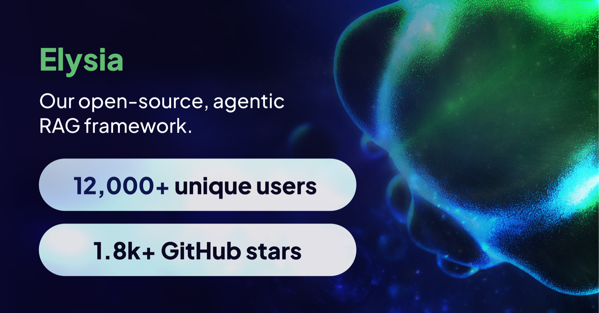
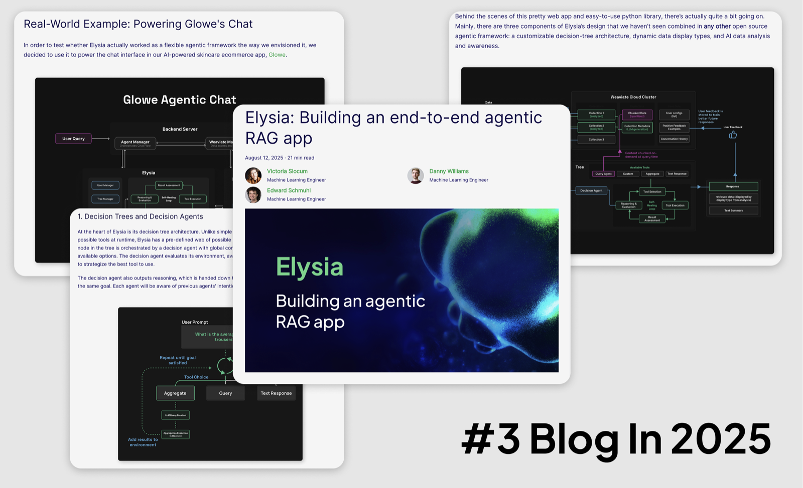
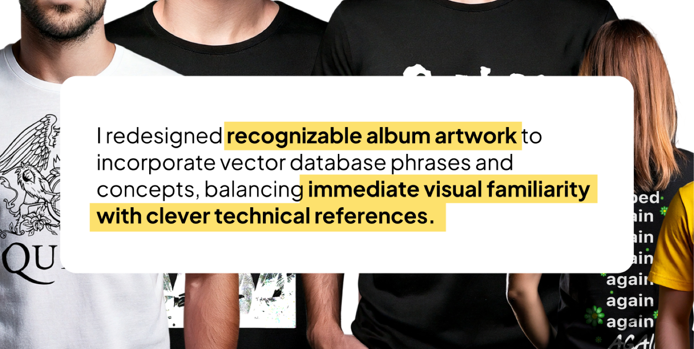

My role on the Weaviate Growth team goes beyond content creation. I help translate deep technical concepts into compelling, shareable narratives that capture developer attention and drive community engagement.

On Weaviate's Growth team, I turn complex, technical ideas into narratives developers actually want to read and share — spanning eBooks, social campaigns, creator branding, product launches, and physical collateral. The work generated over 20 million impressions in the first three quarters of 2025 while reducing ad and influencer marketing cost to $0 through a partially automated system.
Every piece starts with story. The narrative shapes who the audience is, which format fits, when to launch, and how we measure success. Interconnected stories keep the developer community engaged over time, building on each other rather than living as one-off posts.

I designed a comprehensive eBook on agentic architectures to establish Weaviate as an authoritative voice developers trust. Working alongside engineers and another designer, I translated outline sketches into a fully branded layout, supported by a social campaign at launch — driving 13,000+ qualified leads and 7,410+ MQLs from a single eBook.


I developed visual personas for our internal creators. A fresh, electric brand for Victoria, a machine-learning engineer, helped grow her LinkedIn and X following 3× between February and September 2025, and pushed post engagement from hundreds to thousands of reactions.



For the August 2025 launch of Elysia, our open-source agentic RAG framework, I created architectural diagrams and animations that drove traffic and contributed to 12,000+ unique users and 1.8k+ GitHub stars within two months. The accompanying blog post ranked #3 among Weaviate's 2025 blogs.


For "Weaviate on Tour," I redesigned album-style artwork that wove vector-database phrases and concepts into recognizable music references — creating a signature event presence that went well beyond traditional merch.
